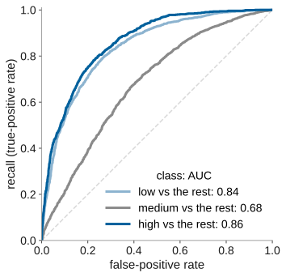
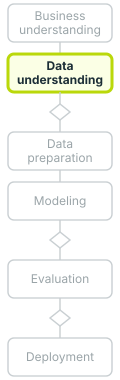
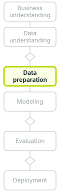
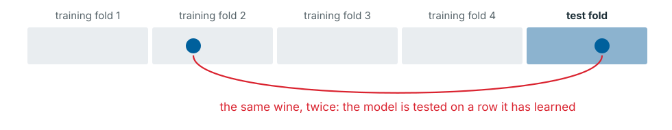

name: title layout: true class: cover --- count: false .section-mark.center[ ## Beyond binary classification ### Several classes: their errors, their scores, and the wine grades <br /> Oscar Esteban <<code>oscar.esteban@hevs.ch</code>> <br /> EAD · Exploration avancée de données et intelligence décisionnelle · 16.10.2026 ] ??? This is the last deck of the first teaching day. Decks 1 through 3 introduced CRISP-DM, built a first credit-scoring model, defined the confusion matrix and the binary metrics, introduced cross-validation with four algorithms, and ended on the ROC curve and AUC. All of that assumed two classes. This deck generalises to several classes, using the wine-quality dataset as its running example. It covers multi-class probabilities, the K by K confusion matrix with per-class precision and recall, three averaging strategies, ROC per class, and cost-sensitive decisions. A hands-on session on the wine data and a discussion of ordered grades complete the deck. --- name: newsection layout: true .perma-sidebar[ <p class="rotate"> <a rel="license" href="http://creativecommons.org/licenses/by/4.0/"><img alt="Creative Commons License" style="border-width:0; height: 20px; padding-top: 6px;" src="https://i.creativecommons.org/l/by/4.0/88x31.png" /></a> <span style="padding-left: 10px; font-weight: 600;">Beyond binary classification (16.10.2026)</span> </p> ] --- class: vcenter # This deck: from two classes to several .cards.steps[ .card[ .enum[1] <span class="part">Several classes generalise two.</span> One probability per class; one model per class, or one for all. Slides 2 and 3. ] .card[ .enum[2] <span class="part">Errors and scores, once per class.</span> The K × K matrix, precision and recall per class, the averages, ROC per class, costs. Slides 4 to 8. ] .card[ .enum[3] <span class="part">Hands-on 3: the wine dataset.</span> 6,497 wines, seven grades, 1,177 copies; Dataiku on the grades, then on three lines. Slides 9 to 15. ] .card[ .enum[4] <span class="part">Ordered grades.</span> Classes, a number, or fewer grades: what the winery should deploy. Slide 16. ] ] ??? The deck is organised into four parts. Part 1 (slides 2 and 3) shows that multi-class classification gives one probability per class and can be solved by one model per class or by a single model that handles all classes at once. Part 2 (slides 4 to 8) extends the evaluation tools of deck 2 to several classes: the K by K confusion matrix, per-class precision and recall, three averaging strategies (micro, weighted, macro), ROC per class, and cost matrices. Part 3 (slides 9 to 15) is the hands-on: students work with the wine dataset of 6,497 wines in seven grades, discover 1,177 duplicate rows, and train on both seven grades and three regrouped lines. Part 4 (slide 16) asks whether treating ordered grades as unordered classes is the right choice, and what the winery should deploy. Each part builds on deck 2's binary evaluation framework and extends it to the more general setting. The separation into per-class measurement (part 2) and practice (part 3) lets the theory settle before students meet the data. --- class: stepwise-svg # Two classes were the simplest case <img class="phase-thumb" src="images/phase-mo.svg" alt="The CRISP-DM phases, modeling lit" /> .beside-thumb[ <object type="image/svg+xml" data="images/class-probs.svg" style="width: 100%; display: block; margin: 0.2em auto 0; pointer-events: none;"></object> <div class="quad step-3"> <div><b>A wine's line</b>low, medium or high</div> <div><b>A customer's segment</b>one of five profiles</div> <div><b>A ticket's department</b>billing, technical, sales</div> <div><b>A product's category</b>from its description</div> </div> .step-3.lead[Each row still gets exactly one class: the most probable, unless the costs say otherwise (slide 8).] ] .footnote[Left: deck 1's example. Right: one wine of the course file (line 12), a random forest under 5-fold cross-validation, scikit-learn. Dataiku DSS 13, *Prediction settings*: two-class and multiclass classification.] ??? Deck 2 worked with two classes, bad and good, and one probability P(bad) = 0.34 that a threshold turned into a decision. When the target has more than two values, the model produces one probability per class. Dataiku DSS describes multi-class classification as the setting "when targets can be one of many categories" (Dataiku, 2024). The slide shows line 12 of the course file, a white wine whose actual grade is 5, which maps to the low line (grade 5 or less). A random forest of 500 trees under 5-fold stratified cross-validation assigns it probabilities 0.19 low, 0.59 medium, 0.22 high. The probabilities sum to one, a property guaranteed by the softmax function in native multi-class models (James et al., 2021, pp. 140 to 141). The model calls this wine medium, although it is actually low: it is one of the 618 low wines that the confusion matrix on slide 4 places in the low-actual, medium-predicted cell. The three lines (low for grade 5 or less, medium for 6, high for 7 or more) are the course's own grouping of the seven grades, chosen to illustrate multi-class evaluation, not drawn from a published source. The four examples at the bottom, a wine's line, a customer segment, a ticket's department and a product category, show that multi-class targets arise across business domains. --- class: stepwise-svg # One model per class, or one for all <img class="phase-thumb" src="images/phase-mo.svg" alt="The CRISP-DM phases, modeling lit" /> .beside-thumb[ <object type="image/svg+xml" data="images/one-vs-rest.svg" style="width: 100%; display: block; margin: 0 auto; pointer-events: none;"></object> <div class="duo step-5"> <div><b class="k">One per class: one-vs-rest</b>K two-class models, each against the rest; the most confident wins. Any two-class algorithm works so. Support vector machines (SVM) also pair the classes: one-vs-one.</div> <div><b class="k">One for all</b>Some models handle K classes at once: multinomial logistic regression, trees and forests, neural networks. In Dataiku: <b>Design → Target</b>, <i>Multiclass classification</i>.</div> </div> ] .footnote[Illustrative points. G. James et al. (2021), pp. 140 to 141 and 385; R. Rifkin and A. Klautau (2004). K: the number of classes.] ??? Two strategies turn a two-class algorithm into a multi-class one. In one-vs-rest (also called one-vs-all), K binary classifiers are trained, each separating one class from all the others; the class whose classifier gives the highest confidence wins (James et al., 2021, p. 385; Rifkin & Klautau, 2004). Support vector machines (SVM) also use one-vs-one, where one classifier is trained for each pair of classes and their votes are tallied (James et al., 2021, p. 385). Rifkin and Klautau showed that, with well-tuned binary learners, one-vs-all performs essentially as well as more elaborate decomposition schemes on most problems (Rifkin & Klautau, 2004). Some models handle K classes directly: multinomial logistic regression extends the two-class model with "a single class to serve as the baseline" (James et al., 2021, p. 140, verbatim), trees and forests split nodes on any class, and neural networks output K values through a softmax layer. In Dataiku, gradient-boosted trees use one-vs-all internally for multi-class problems (Dataiku, 2024). The figure's eighteen points are illustrative, drawn to show how three binary boundaries divide a plane into three regions. When the student sets the target to a column with more than two values, Dataiku detects multi-class classification automatically. --- class: stepwise-svg # The confusion matrix grows to K × K <img class="phase-thumb" src="images/phase-ev.svg" alt="The CRISP-DM phases, evaluation lit" /> .beside-thumb[ <object type="image/svg+xml" data="images/confusion-3.svg" style="width: 100%; display: block; margin: 0.3em auto 0; pointer-events: none;"></object> .step-3.lead[Each class in turn is the positive one: its own 2 × 2, its own precision and recall.] ] .footnote[5,320 distinct wines in three lines: low (grade 5 or less), medium (6), high (7 or more). A random forest of 500 trees, 5 stratified folds, scikit-learn; `quality` is not an input.] ??? With two classes, the confusion matrix was 2 by 2. With K classes it grows to K by K: rows are the actual classes, columns are the predicted ones, and the diagonal holds the correct predictions. For the three wine lines on 5,320 distinct wines (a random forest of 500 trees, 5 stratified folds, quality not an input), the matrix reads: low actual has 1,351 predicted low, 618 predicted medium, 19 predicted high; medium actual has 553 predicted low, 1,570 predicted medium, 200 predicted high; high actual has 39 predicted low, 552 predicted medium, 418 predicted high. Each class can be treated as the positive one in turn, producing its own 2 by 2 sub-matrix. For the high line: TP = 418, FN = 39 + 552 = 591, FP = 19 + 200 = 219, TN = 1,351 + 618 + 553 + 1,570 = 4,092 (Grandini et al., 2020). These four counts are exactly the true positives, false negatives, false positives and true negatives that deck 2 (slide 6) defined for the binary case. From them, each class gets its own precision and recall, which the next slide reports. --- # Each class gets its own precision and recall <img class="phase-thumb" src="images/phase-ev.svg" alt="The CRISP-DM phases, evaluation lit" /> .beside-thumb[ .tbl.wide.big[ | line | wines | precision | recall | F1 | |---|---|---|---|---| | low (grade 5 or less) | 1,988 | 0.70 | 0.68 | 0.69 | | medium (grade 6) | 2,323 | 0.57 | 0.68 | 0.62 | | high (grade 7 or more) | 1,009 | 0.66 | <span class="lit">0.41</span> | <span class="lit">0.51</span> | ] <div class="duo big"> <div><b class="k">Precision of high</b>Of the 637 wines called high, 418 are: 0.66.</div> <div><b class="k">Recall of high</b>Of the 1,009 high wines, 418 are called high: 0.41. Another 552 are called medium.</div> </div> .lead.big[The premium line is the one the model misses most.] ] .footnote[The model and folds of slide 4. Precision, recall and F1 as in deck 2, slide 9, one class at a time.] ??? Each class's precision and recall are computed from its 2 by 2 sub-matrix of the K by K confusion table. Low: precision 0.70, recall 0.68, F1 0.69, support 1,988 wines. Medium: precision 0.57, recall 0.68, F1 0.62, support 2,323 wines. High: precision 0.66, recall 0.41, F1 0.51, support 1,009 wines. The model called 637 wines high (418 true positives plus 219 false positives), and 418 of them were correct, giving a precision of 0.66. But of the 1,009 actually high wines, only 418 were recognised: recall 0.41. Another 552 high wines were called medium, as the confusion matrix of slide 4 shows. The high line is the one the model misses most. This matters for the winery because the premium wines carry the highest margin; missing them and selling them as medium loses revenue. Low wines have balanced precision and recall (0.70 and 0.68), medium wines have higher recall but the lowest precision (0.57), meaning many wines called medium were actually low or high. These per-class numbers carry more information than a single accuracy figure, but reducing them to one score requires a choice, which slide 6 addresses. --- # One score for the whole model hides a choice <img class="phase-thumb" src="images/phase-ev.svg" alt="The CRISP-DM phases, evaluation lit" /> .beside-thumb[ .tbl.wide.nowrap1[ | average | how | three lines | seven grades | |---|---|---|---| | **micro** | pool every decision; with one class per row, it equals accuracy | 0.63 | 0.58 | | **weighted** F1 | per-class F1, each weighted by its class's size | 0.62 | 0.55 | | **macro** F1 | the mean of per-class F1: every class counts the same | 0.61 | <span class="lit">0.24</span> | | baseline | always the largest class: medium, or grade 6 | 0.44 | 0.44 | ] .lead[With seven grades, the rare ones (3, 4, 8, 9: 389 wines) are almost never right. Micro hides them; macro shows them.] ] .footnote[M. Sokolova and G. Lapalme (2009), Table 3, p. 430; J. Opitz and S. Burst (2019): "macro F1" has two formulas, here the mean of per-class F1. The same forest and folds on both targets. Dataiku: one-vs-all metrics, averaged with or without class weights (DSS 13, *Prediction settings*).] ??? Three averaging rules condense per-class metrics into one number, and they answer different questions. Micro-averaging pools every decision across classes; with one label per row, it equals accuracy: 0.63 for three lines, 0.58 for seven grades. Weighted F1 weights each class's F1 by its size: 0.62 for three lines, 0.55 for seven grades. Macro F1 is the unweighted mean of per-class F1 scores (the formula used here follows Opitz & Burst, 2019): 0.61 for three lines, but only 0.24 for seven grades, because the rare grades 3, 4, 8 and 9, which hold 389 wines together, have near-zero recall (0.00, 0.02, 0.00, 0.00). "Macro-averaging treats all classes equally while micro-averaging favors bigger classes" (Sokolova & Lapalme, 2009, p. 430, verbatim). The baseline, always predicting the largest class (medium, which is grade 6), gives an accuracy of 0.44 for both targets. Dataiku lets the user choose between weighted and unweighted class averaging for the one-vs-all metrics (Dataiku, 2024). For class weights, the unweighted average is often more adequate, because class weights already suggest equal importance. For no weighting, the weighted average is more adequate (Dataiku, 2024). The gap between micro and macro on seven grades, 0.58 versus 0.24, is the clearest signal that the model ignores the rare classes. --- # ROC and AUC, once per class <img class="phase-thumb" src="images/phase-ev.svg" alt="The CRISP-DM phases, evaluation lit" /> .beside-thumb[ .figtext.wide-fig[ <p></p> <ul> <li>Each class against the rest: its own ROC curve, as in deck 2.</li> <li><b>High</b>: AUC 0.86, the best ranked, yet recall 0.41. The ranking is good; the cut, the most probable class, is not.</li> <li>In Dataiku: <b>Performance → ROC & PR curves</b>, choose the class. Its multiclass AUC averages the classes' AUCs.</li> </ul> ] ] .footnote[The model and folds of slide 4; the mean of the three AUCs is 0.79. Dataiku DSS 13, *Prediction settings*: ROC AUC computed per class (one-vs-all or one-vs-one), then averaged.] ??? The ROC curve and AUC from deck 2 generalise to multi-class problems through the one-vs-rest decomposition: each class is treated as positive against all others, and its own ROC curve is drawn. On the three wine lines, low has an AUC of 0.838, medium 0.68, and high 0.86. The mean of the three AUCs is 0.793. High has the best AUC (0.86), meaning the model ranks high wines above the rest well, yet its recall is only 0.41 (slide 5). The AUC measures the quality of the ranking across all thresholds, but the default decision rule, assign the class with the highest probability, is one particular cut, and that cut misclassifies most high wines as medium. A good ranking does not guarantee a good decision at a specific operating point. In Dataiku, the Performance tab under ROC and PR curves shows the ROC curve for each class, and the platform's multi-class AUC averages the per-class AUCs, computed in one-vs-all or one-vs-one fashion and then averaged across classes (Dataiku, 2024). The concept page on one-vs-rest notes that DSS computes the ROC curve for each one-versus-all subproblem, so each class gets the same evaluation tool that deck 2 used for the binary case. --- # Several classes, several costs <img class="phase-thumb" src="images/phase-ev.svg" alt="The CRISP-DM phases, evaluation lit" /> .beside-thumb[ .figtext.big[ <div> <p class="lead"><b>What each mistake costs the winery</b> (illustrative)</p> <div class="costs"> <table> <tr><th>actual \ sold as</th><th>low</th><th>medium</th><th>high</th></tr> <tr><th>low</th><td class="zero">0</td><td>1</td><td>4</td></tr> <tr><th>medium</th><td>1</td><td class="zero">0</td><td>2</td></tr> <tr><th>high</th><td>3</td><td>1</td><td class="zero">0</td></tr> </table> </div> </div> <ul> <li>Two classes needed one threshold (deck 2); K classes need a K × K cost matrix.</li> <li>The rule: sell each wine in the line with the <b>lowest expected cost</b>, each cost weighted by its probability.</li> <li>The wine of slide 2 (0.19, 0.59, 0.22): low 1.25, <b>medium 0.41</b>, high 1.94.</li> </ul> ] .lead.big[With these costs, a premium wine sold as low costs three times a cheap one sold as medium: the cut moves.] ] .footnote[C. Elkan (2001), section 1: predict the class with the lowest expected cost. Costs illustrative; probabilities of slide 2.] ??? In deck 2, a single threshold separated two classes, and a cost matrix quantified the penalty of each error. With K classes, the cost matrix grows to K by K. The slide's illustrative cost matrix has rows as actual classes and columns as the line the wine is sold as: selling a high wine as low costs 3, while selling a low wine as high costs 4. Elkan (2001, section 1) states the general rule: predict the class that leads to the lowest expected cost, where the expectation is computed using the probability of each class. In Elkan's convention, rows correspond to predicted classes and columns to actual classes, which is the transpose of the slide's layout (Elkan, 2001). The calculation applies to any model that outputs probabilities. For the wine of slide 2 (probabilities 0.19, 0.59, 0.22), the expected cost of selling as low is 0.19 times 0 plus 0.59 times 1 plus 0.22 times 3 = 1.25; selling as medium is 0.19 times 1 plus 0.59 times 0 plus 0.22 times 1 = 0.41; selling as high is 0.19 times 4 plus 0.59 times 2 plus 0.22 times 0 = 1.94. Medium has the lowest expected cost, so the wine should be sold as medium. With these illustrative costs, a premium wine sold as low costs three times a cheap wine sold as medium, which shifts the decision boundary compared to a uniform cost. The cost-sensitive rule can be applied to any model's class probabilities, regardless of the training method. --- .section-mark[ # Hands-on 3: the wine dataset ] ??? This section (slides 10 to 15) applies the multiclass tools of slides 4 to 8 to a real dataset: wines graded by expert tasters. Slide 10 introduces the data and its provenance. Slide 11 shows the uneven distribution of grades. Slide 12 reveals that nearly a fifth of the rows are exact duplicates, inflating the score. Slide 13 is the hands-on, in which groups train a multiclass model on seven grades in Dataiku. Slide 14 collapses the grades into three business lines, but a deliberate mistake produces perfect scores. Slide 15 explains why: the original target column was left as an input, a case of data leakage. --- # The data: what one wine knows <p></p> .beside-thumb.terms[ <table> <tr><th>fixed acidity</th><th>volatile acidity</th><th>residual sugar</th><th>sulphates</th><th>alcohol</th><th>...</th><th>color</th><th class="tgt">quality</th></tr> <tr><td>7.0</td><td>0.27</td><td>20.7</td><td>0.45</td><td>8.8</td><td>...</td><td>white</td><td class="tgt">6</td></tr> <tr><td>7.4</td><td>0.70</td><td>1.9</td><td>0.56</td><td>9.4</td><td>...</td><td>red</td><td class="tgt">5</td></tr> <tr><td>7.3</td><td>0.65</td><td>1.2</td><td>0.47</td><td>10.0</td><td>...</td><td>red</td><td class="tgt">7</td></tr> <tr><td>6.2</td><td>0.66</td><td>1.2</td><td>0.39</td><td>12.8</td><td>...</td><td>white</td><td class="tgt">8</td></tr> <tr><td>6.2</td><td>0.45</td><td>4.4</td><td>0.52</td><td>9.8</td><td>...</td><td>white</td><td class="tgt">4</td></tr> </table> <div class="legend"> <div><b>A row</b>: one wine sample, tested by the region's certification body, 2004 to 2007.</div> <div><b>A column</b>: one of 11 laboratory measurements, and the wine's colour.</div> <div><b>The target</b>: <code>quality</code>, the median of at least three blind tasters' scores, 0 to 10.</div> </div> <div class="facts"> <div><span class="num">6,497</span>vinho verde wines from northern Portugal: 4,898 white, 1,599 red.</div> <div><span class="num">7</span>grades in use, 3 to 9, of the scale's 11.</div> <div><span class="num">0</span>missing values, but 1,177 rows that copy another row (slide 12).</div> </div> ] .footnote[Lines 2, 4900, 4907, 19 and 48 of the course file. P. Cortez et al. (2009), *Decision Support Systems* 47(4):547 to 553; UCI Machine Learning Repository, dataset 186, doi:10.24432/C56S3T, .lic[CC BY 4.0]. The course file joins the red and white files and adds `color`.] ??? The dataset comes from Cortez et al. (2009), who collected vinho verde certification samples from the Comissao de Viticultura da Regiao dos Vinhos Verdes (CVRVV) in northern Portugal between May 2004 and February 2007. Each wine was assessed by a minimum of three blind tasters, and the final grade is the median of their scores on a 0 (very bad) to 10 (excellent) scale (Cortez et al., 2009, p. 6). Table 1 of the paper lists the 11 physicochemical measurements, for example fixed acidity in grams of tartaric acid per cubic decimetre, volatile acidity in grams of acetic acid per cubic decimetre, and alcohol as a volume percentage (Cortez et al., 2009, pp. 6 and 23). Cortez et al. modelled red and white wines separately; the course file joins both (4,898 white, 1,599 red) into 6,497 rows and adds a `color` column. The five rows on the slide are lines 2, 4,900, 4,907, 19 and 48 of that file. Only physicochemical inputs are released: no grape variety, brand or price is available, which limits what any model can learn from this data alone (Cortez et al., 2009, UCI record). The data are distributed by the UCI Machine Learning Repository as dataset 186, under a Creative Commons Attribution 4.0 licence. --- # Seven grades; two hold three wines in four .beside-thumb[ <img src="images/wine-classes.svg" style="width: 86%; display: block; margin: 0 auto;" alt="Wines per grade, 3 to 9" /> <div class="duo"> <div><b class="k">Imbalanced</b>Grades 5 and 6 hold 77% of the wines; always saying 6 is right 44% of the time.</div> <div><b class="k">Rare</b>Grades 3 and 9 hold 35 wines between them; the five 9s are all white.</div> </div> ] .footnote[Counts of the course file as uploaded, copies included (slide 12). P. Cortez et al. (2009), Fig. 1: the grades of red and white, apart.] ??? The grades in use run from 3 to 9, seven of the scale's eleven possible values. Cortez et al. (2009, p. 6) plotted the histograms for red and white separately (Fig. 1), and both show a concentration around the middle grades. In the combined course file, grades 5 (2,138 wines) and 6 (2,836 wines) together account for 77% of the 6,497 rows. This is a case of class imbalance: a model that always predicts grade 6 is correct 44% of the time (2,836 of 6,497), which sets the baseline any trained model must beat. At the extremes, grades 3 and 9 together hold only 35 wines, and all five wines graded 9 are white. Slide 6 showed that macro F1 exposes these rare classes: because the forest gets grades 3, 8 and 9 almost never right, its macro F1 on seven grades is only 0.24, far below its accuracy of 0.58. Slides 4 and 5 showed the same effect in the three-line grouping, where the high line (grades 7 and above) had a recall of only 0.41. --- # Remove the duplicates before anything else <p></p> .beside-thumb[ <div class="metric2"> <div class="alert"><span class="num">1,177</span>rows are exact copies of another row: 18% of the file. 5,320 distinct wines remain.</div> <div><span class="num">0.67 → 0.58</span>accuracy of the same forest on the seven grades, 5 folds: with the copies, then without them.</div> </div> <p></p> .lead[In Dataiku, the visual recipe *Distinct* keeps one row of each, before the Lab.] ] .footnote[Copies counted on all 13 columns; none carries two grades. scikit-learn, a random forest of 500 trees, 5 stratified folds. S. Kaufman et al. (2012): leakage.] ??? Of the 6,497 rows, 1,177 are exact copies of another row on all 13 columns, 18% of the file. None of these duplicate sets carries two different grades, so each duplicated wine is a repeated observation, not a conflict. Cortez et al. (2009) report no duplicate check in their procedure. When duplicates remain, a random split for cross-validation is likely to place identical rows in both the training fold and the test fold, and the model scores points by recognising a row it has already seen (Kaufman et al., 2012). The slide quantifies the effect: on the same random forest with five stratified folds, accuracy on seven grades drops from 0.67 with the copies to 0.58 without them. After deduplication, 5,320 distinct wines remain: 3,961 white, 1,359 red. In Dataiku, the visual recipe Distinct keeps one row of each set of identical rows; the slide directs groups to apply it before any modelling. Removing duplicates is a data-preparation step that belongs before the train/test split, not after it. --- # Hands-on 3: grade the wines <img class="phase-thumb" src="images/phase-du-mo.svg" alt="The CRISP-DM phases, data understanding to modeling lit" /> .beside-thumb[ .need[**The need.** The winery wants each new wine placed in a line before the tasting panel sits: can 11 lab measurements predict the grade?] <div class="moves"> <div><b>1. Explore</b>How many wines per grade, per colour?<br /><code>+ Dataset → Upload your files</code>, <code>Explore</code></div> <div><b>2. Distinct</b>Remove the copies. How many rows remain?<br /><code>+ Recipe → Distinct</code></div> <div><b>3. Train</b>Target <code>quality</code>, <i>Multiclass classification</i>; <i>K-fold cross-test</i>, 5 folds, stratified.<br /><code>Lab → AutoML Prediction</code>, <code>Design</code></div> <div><b>4. Look</b>Which grades are never predicted? The ROC curve of grade 8.<br /><code>Results → model → Performance</code></div> </div> <div class="roles"> <div><b>Driver</b>: works Dataiku; says what each screen shows before clicking on.</div> <div><b>Mapper</b>: writes the counts and the answers on the sheet.</div> <div><b>Referee</b>: checks each step, challenges each conclusion, speaks for the group.</div> </div> .time[Sheet *Hands-on 3*, panels 1 to 3. Groups of three. 25 minutes.] ] .footnote[Data: P. Cortez et al. (2009); UCI Machine Learning Repository, dataset 186, doi:10.24432/C56S3T, CC BY 4.0; red and white joined by the course.] ??? The winery's question is whether 11 laboratory measurements can predict a wine's quality grade before the tasting panel sits. The core of the hands-on has four moves. Move 1 (Explore) uploads the combined file and examines how many wines fall in each grade and each colour. Move 2 (Distinct) removes the duplicates identified on slide 12, leaving 5,320 rows. Move 3 (Train) sets `quality` as the target, selects Multiclass classification as the prediction type, and trains under K-fold cross-test with 5 stratified folds. Because `quality` is numeric, Dataiku may propose Regression instead of Multiclass classification; if so, the prediction type must be switched (Dataiku, 2024, Prediction settings, Target settings). Stratified folds preserve each grade's share in every fold, which matters because grade 9 has exactly 5 distinct wines: one per fold. Dataiku detects the classes on a sample of the data and needs every class in both the training and the test rows (Dataiku, 2024); with five wines graded 9, this is the step to watch. Move 4 (Look) reads the results, in particular which grades the model never predicts and the Receiver Operating Characteristic (ROC) curve of grade 8. The exercise runs in groups of three: Driver works Dataiku and says what each screen shows before clicking, Mapper writes the counts and answers on the sheet, Referee checks each step and challenges each conclusion. Sheet panels 1 to 3, 25 minutes. --- # Hands-on 3, continued: three lines, not seven <img class="phase-thumb" src="images/phase-du-mo.svg" alt="The CRISP-DM phases, data understanding to modeling lit" /> .beside-thumb[ <div class="moves"> <div><b>5. Regroup</b>A Prepare recipe on the distinct wines: a new column <code>grade</code> from the Formula below.<br /><code>+ Recipe → Prepare</code>, <i>Formula</i></div> <div><b>6. Retrain</b>A new AutoML prediction on <code>grade</code>, same settings. Train.<br /><code>Lab → AutoML Prediction</code></div> <div><b>7. Look</b>The score of every algorithm, and the confusion matrix.<br /><code>Results</code></div> <div><b>8. Decide</b>Seven grades or three lines: which would the winery use, judged by micro or by macro?<br />On the sheet, panel 5</div> </div> .formula[`if(quality <= 5, "low", if(quality == 6, "medium", "high"))`] .admonition.question.near[ <i class="fa-solid fa-circle-question"></i> Every algorithm now scores 1.000. **What happened?** Panel 4 of the sheet says where to look. ] .time[Sheet panels 4 and 5. 15 minutes.] ] ??? Moves 5 to 8, on sheet panels 4 and 5, extend the exercise past the checkpoint. Move 5 (Regroup) adds a Prepare recipe with a Formula that maps the seven grades into three lines: `if(quality <= 5, "low", if(quality == 6, "medium", "high"))`. Low wines go to the entry range, medium to the standard, high to the premium. Move 6 (Retrain) creates a new AutoML prediction on the `grade` column with the same settings (Multiclass classification, 5 stratified folds). Move 7 (Look) reveals that every algorithm scores 1.000 on every metric. A perfect score on a real dataset is a sign that something is wrong, not that the model is excellent; panel 4 of the sheet directs the groups to Features handling in Design, where they can identify which column gives the grade away and reject it. Slide 15 explains the leak in full. Move 8 (Decide) compares the seven-grade and three-line models side by side and asks which version the winery would deploy, judged by micro or by macro averaging. 15 minutes. --- # The old target was still a feature .beside-thumb[ .figtext.wide-fig[ <object type="image/svg+xml" data="images/quality-grade.svg" style="width: 100%; pointer-events: none;"></object> <ul> <li><code>quality</code> is still a column, and Dataiku takes every column as an input by default.</li> <li>From <code>quality</code>, the Formula gives <code>grade</code> back: a perfect score, and nothing learned for a new wine, whose grade nobody knows yet.</li> <li><b>Design → Features handling</b>: reject <code>quality</code>, and train again.</li> </ul> ] .lead.big[This is <b>leakage</b>: an input that holds what the model will not know when it is used.] ] .footnote[S. Kaufman, S. Rosset, C. Perlich and O. Stitelman (2012), *Leakage in data mining*. Deck 1, slide 16: select the columns that carry signal.] ??? The perfect score happens because `quality` is still a column in the dataset, and Dataiku takes every column that is not the target as an input by default. The Formula that computes `grade` from `quality` is a deterministic mapping: knowing `quality` gives `grade` with certainty, so the model memorises the rule rather than learning anything about wine chemistry. This is leakage, the use of information about the target that would not be available when the model is deployed (Kaufman et al., 2012). In deployment, a new wine has no `quality` value, because that is what the model is meant to replace. Provost and Fawcett place the danger in data preparation, which "is performed after the fact" on historical records where every column is already filled (Provost & Fawcett, 2013, p. 30, verbatim). The fix is in Design, Features handling: reject `quality`, then retrain. Deck 1, slide 16 introduced the same principle as CRISP-DM's Select Data task, which covers "selection of attributes (columns) as well as selection of records (rows)" (Chapman et al., 2000, p. 24, verbatim). --- # Grades are ordered: say so in the model <img class="phase-thumb" src="images/phase-ev.svg" alt="The CRISP-DM phases, evaluation lit" /> .beside-thumb[ <div class="trio"> <div><b class="k">As classes</b>A 5 taken for a 6 counts as wrong as a 3 taken for a 9. Seven grades: accuracy <span class="num">0.58</span>, macro F1 <span class="num">0.24</span>.</div> <div><b class="k">As a number</b>Regression predicts 5.7, then rounds. Cortez et al.'s SVM: <span class="num">62 to 65%</span> exact, <span class="num">87 to 89%</span> within one grade.</div> <div class="lit"><b class="k">As fewer grades</b>Low, medium, high, cut where the business decision changes: accuracy <span class="num">0.63</span>, macro F1 <span class="num">0.61</span>.</div> </div> .admonition.question.near[ <i class="fa-solid fa-circle-question"></i> Which version would the winery deploy, and which score should it watch? ] ] .footnote[P. Cortez et al. (2009), Table 2: SVM regression, red and white apart. E. Frank and M. Hall (2001). Forest scores: slides 5 and 6.] ??? Wine grades have a natural order: predicting 5 for a wine that is actually 6 is a smaller error than predicting 9. Three ways to use this order appear on the slide. As classes, a standard multiclass model ignores the order entirely. The random forest on seven grades (slide 6) reaches an accuracy of 0.58 and a macro F1 of only 0.24, because the rare grades are almost never predicted correctly. As a number, regression predicts a continuous value and rounds it back to a grade. Cortez et al. (2009) took this route because it preserves the order. Their support vector machine (SVM), evaluated over 20 runs of 5-fold cross-validation, achieved an accuracy of 62.4% on red wine and 64.6% on white at tolerance 0.5, which counts only the exact grade; at tolerance 1.0, which accepts the neighbouring grade, accuracy rose to 89.0% and 86.8% respectively (Cortez et al., 2009, Table 2, p. 24). Frank and Hall (2001) proposed a third route, recasting a k-class ordinal problem as k minus 1 binary problems of the form "target greater than class i", which lets any classifier exploit the order. The third column on the slide shows the business alternative: collapse the grades into the three lines that drive the winery's pricing. This gives an accuracy of 0.63 and a macro F1 of 0.61, because every class is large enough for the forest to learn. The closing question asks which version the winery should deploy and which score it should watch, linking the evaluation back to the business decision of slide 8. --- # References .refs[ - Cortez, P., Cerdeira, A., Almeida, F., Matos, T. and Reis, J. (2009). Modeling wine preferences by data mining from physicochemical properties. *Decision Support Systems* 47(4):547 to 553. doi:10.1016/j.dss.2009.05.016. Data: UCI Machine Learning Repository, dataset 186, doi:10.24432/C56S3T, CC BY 4.0. - Dataiku (2024). *Prediction settings*, Dataiku DSS 13 reference documentation. - Elkan, C. (2001). The foundations of cost-sensitive learning. *Proceedings of the 17th International Joint Conference on Artificial Intelligence*, 973 to 978. - Frank, E. and Hall, M. (2001). A simple approach to ordinal classification. *Lecture Notes in Computer Science* 2167:145 to 156. doi:10.1007/3-540-44795-4_13. - Grandini, M., Bagli, E. and Visani, G. (2020). Metrics for multi-class classification: an overview. arXiv:2008.05756. - James, G., Witten, D., Hastie, T. and Tibshirani, R. (2021). *An Introduction to Statistical Learning*, 2nd ed. Springer. - Kaufman, S., Rosset, S., Perlich, C. and Stitelman, O. (2012). Leakage in data mining: formulation, detection, and avoidance. *ACM Transactions on Knowledge Discovery from Data* 6(4):1 to 21. doi:10.1145/2382577.2382579. - Opitz, J. and Burst, S. (2019). Macro F1 and macro F1. arXiv:1911.03347. - Rifkin, R. and Klautau, A. (2004). In defense of one-vs-all classification. *Journal of Machine Learning Research* 5:101 to 141. - Sokolova, M. and Lapalme, G. (2009). A systematic analysis of performance measures for classification tasks. *Information Processing & Management* 45(4):427 to 437. doi:10.1016/j.ipm.2009.03.002. ] ??? This slide collects the works cited across the deck. For multiclass evaluation metrics, start with Sokolova and Lapalme (2009) on the systematic comparison of precision, recall and F1 averages, and Grandini et al. (2020) for a broader overview of multiclass metrics. Cortez et al. (2009) document the wine dataset and the regression approach to ordered grades. Kaufman et al. (2012) formalise data leakage. Frank and Hall (2001) introduce ordinal decomposition. --- .section-mark[ # End .large[ Next: 23.10.2026 @ 08h45 (in <span class="timer" data-until="2026-10-23T08:45:00+02:00"></span>) [<i class="fa-solid fa-circle-left"></i>](../03-cv/index.html) [<i class="fa-solid fa-home"></i>](#1) [<i class="fa-solid fa-circle-right"></i>](../../day2/05-dl/index.html) ] ] ??? The next session is on 23 October 2026 at 08:45. It covers text data, time series and deep learning for business decisions. The left arrow links to the previous deck, Model selection and cross-validation. The home icon returns to the cover of this deck. The right arrow links to the next deck, Deep learning for decisions, taught on 23.10.